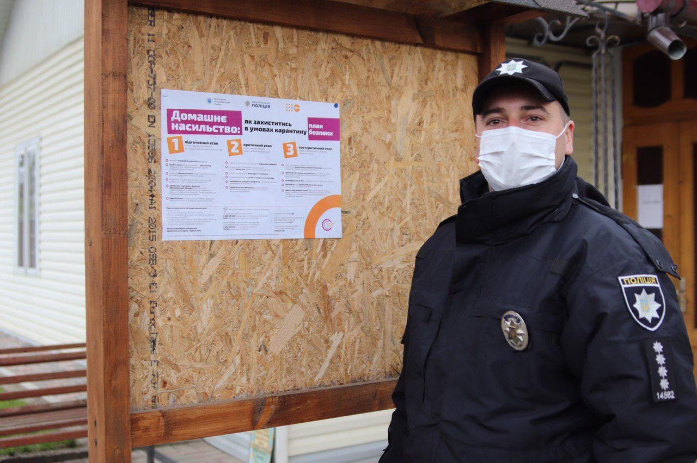
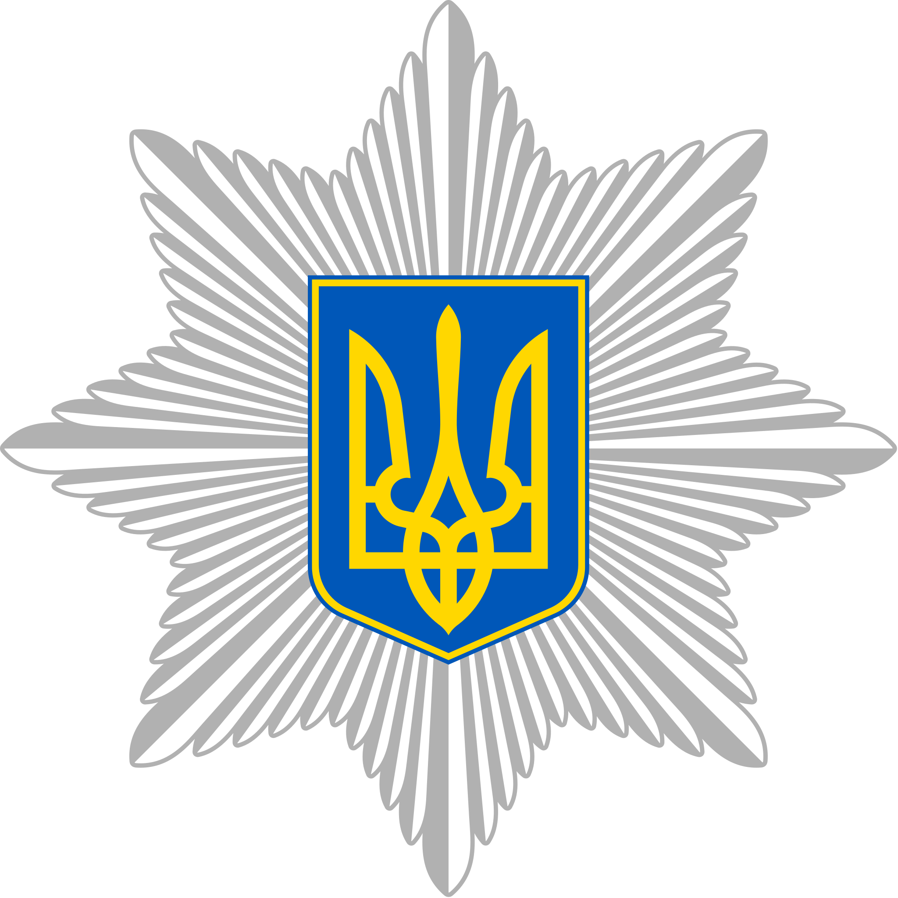
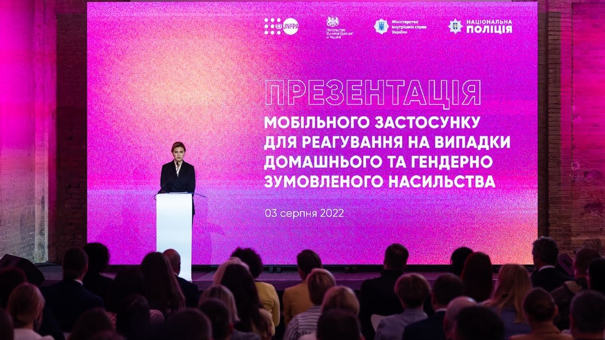
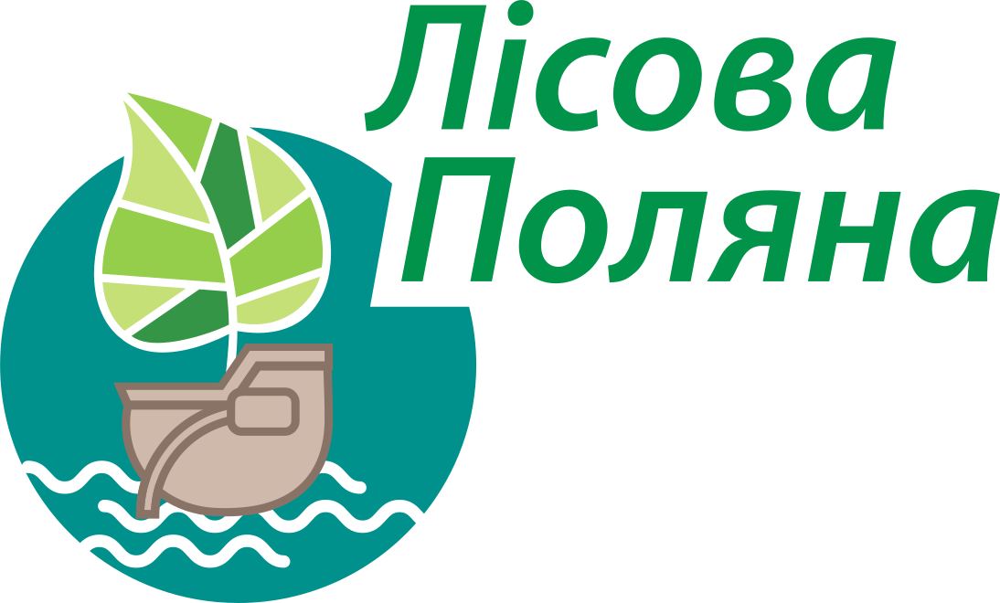
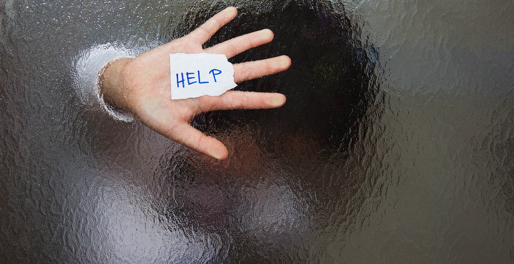
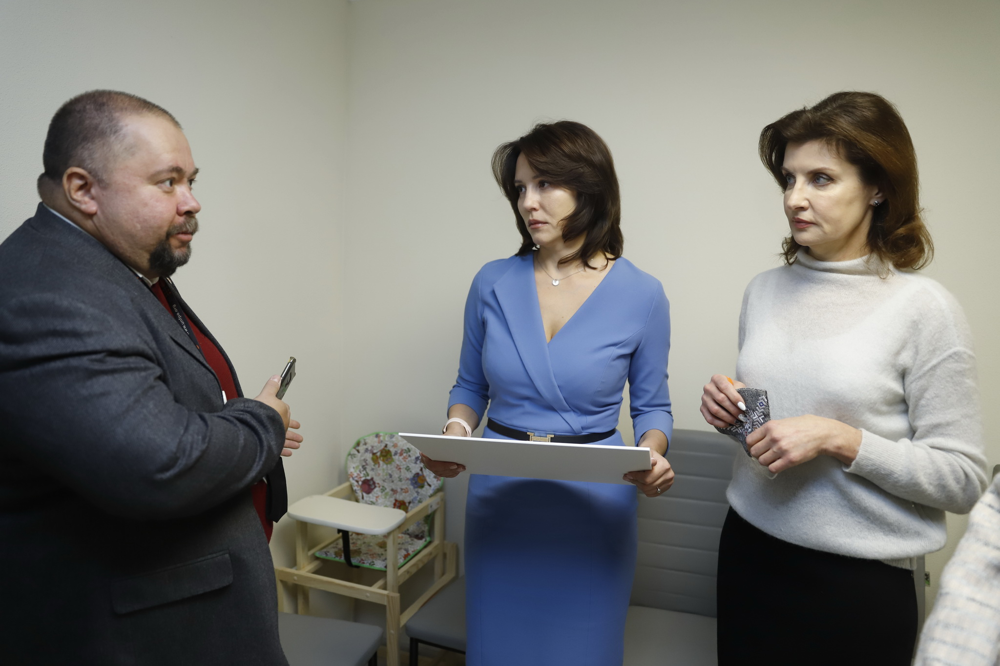
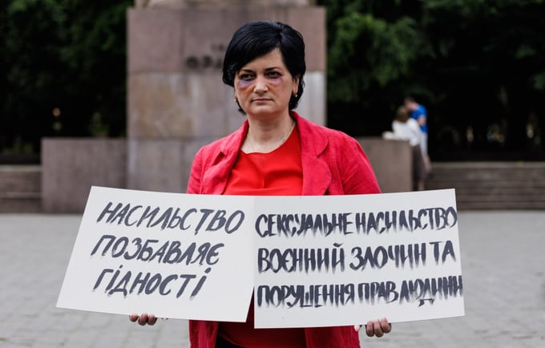
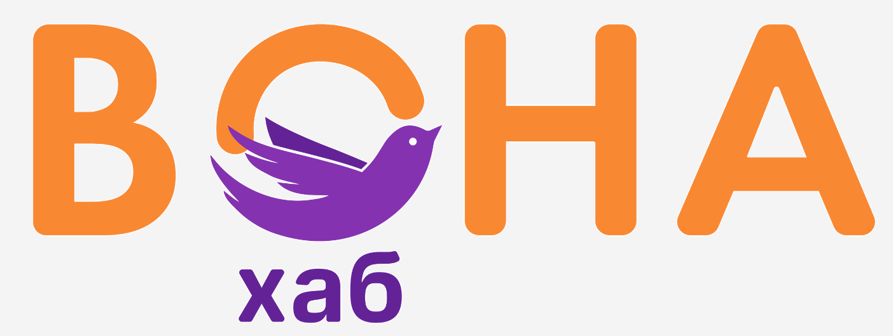
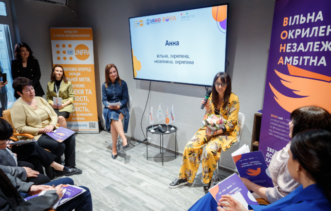

До війни можна ставитися по-філософськи, як до прояву нашої природи, поки вона не
стукає у твої двері. Ми належимо до людського племʼя, яке ділить себе на своїх та
чужих, на співвітчизників та ворогів. І така стереотипізація, відраза до чужого, у
нас закладена еволюційно. Що знадобиться нашій психіці у цей буремний час? Позбавлення
збірного образу ворога людських рис, омертвіння власних почуттів, складніших за бінарну
систему fight or flight (бий-біжи), виконання базових функцій, як у режимі енергозбереження.
Але чи підходить такий режим для цивільного життя? Ми поєднуємо в собі звірине та
людське: війну та людяність, ненависть до ворога і любов до власної родини,
безжальність та толерантність, світ і темряву — і сподіваємось, що війна не осідає
в наших легенях, як радіоактивний пил. Чи вдалося нам «відгородити» насильство
лінією фронту? Чи стало домашнє насильство
більш нагальною, але менш обговорюваною проблемою після початку повномасштабного вторгнення?
«Війна оголює нас, іноді ті, хто воює, ті, хто дотичні до нищення ворога, вони на
певний час змушені забути якісь навички цивілізованої людини. Але це не має робити
з людини загрозу суспільству»
Але чи вказує це на те, що повномасштабне вторгнення спричинило загострення проблеми?
Спробуємо відвідати основні «контрольні пункти» допомоги потерпілим
у Київській області
та побачити ситуацію на власні очі. Наша перша зупинка — функція
консультування, адже, часто єдина ланка, яка поєднує потерпілу та світ
— це телефон, а її перший янгол — консультант гарячої лінії.
«Війна не є причиною домашнього насильства, але вона є фактором ризику, зокрема
його випадки стали більш жорстокими. Тобто у сімʼях, де і до початку повномасштабного
вторгнення було домашнє насильство, ситуація стала тільки гіршою. Крім того, потерпілі
самі себе звинувачують, що в теперішніх умовах країна має реагувати на ситуації,
повʼязані з війною, а домашнє насильство… «Я буду звертатися про допомогу після перемоги».
Але для цієї людини перемога може ніколи не настати, бо через ситуацію домашнього
насильства людина може просто до неї не дожити»
, — пояснюєАльона Кривуляк, директорка департаменту Національних гарячих ліній та соціальної допомоги Громадської організації «Ла Страда-Україна»
Вікторія Кутілова зауважує, що на телефон довіри
Київського міського центру гендерної рівності, запобігання та протидії насильствупоступає багато звернень щодо конфліктів
у родині: у подружжі, між батьками та дітьми. Залежно від того, яким є звернення, воно може
набувати різного розвитку: обов’язковою є перша консультація, після цього потерпілу можуть
перенаправити в організації, де їй нададуть правову або карʼєрну допомогу. За наявності загрози
здоровʼю або життю особи, що звертається, їй можуть запропонувати місце у кризовій кімнаті, де
вона в праві перебувати до десяти діб. Якщо ж не вдається розмістити жінку там, то знаходиться місце у
притулку для потерпілих від домашнього насильства. За необхідності, вона може перебувати тут протягом шести місяців.
Варто зазначити, що українське законодавство передбачає аналогічні умови для чоловіків,
що є потерпілими від домашнього насильства. Тобто гендерні стереотипи, які вимагають від
чоловіка лідерства у родині, не впливають на права цього чоловіка на безпечний простір.
Крім того, за даними Київського міського центру гендерної рівності,
запобігання та протидії насильству, кількість запитів від чоловіків
значно збільшилася від початку повномасштабного вторгнення. Отже, у більшості випадків потерпіла
особа, що звертається до функції консультування, має потрапляти і потрапляє в сферу відповідальності
функції реагування.
Розділ другий: 102
У 2022 році в Україні було ратифіковано
Конвенцію Ради Європи про запобігання насильству стосовно жінок та домашньому насильству
та боротьбу із цими явищами, і це є кроком уперед, тому що да
ний документ більш чітко визначає низку заходів, які мають бути вжиті щодо всіх субʼєктів
протидії домашньому насильству. Так, в Україні і раніше де-юре існували такі поняття як: т
ерміновий заборонний припис (заборона авторові насильства перебувати в одному просторі з п
отерпілою), кризові кімнати, притулки, досить сучасне законодавство, адміністративна та к
римінальна відповідальність за вчинення домашнього насильства.
У минулому це не завжди означало, що потерпіла жінка отримує належний захист.
Звісно, згаданий великий крок вперед насправді є низкою маленьких, значення яких помітне
тільки на відстані. За словами Марини Зимник, капітана поліції та виконувача обов'язків
інспектора відділу дільничних офіцерів управління Національної поліції у м. Києві, важливим
є те, що тепер стало легше розірвати шлюб. Раніше у питаннях про розлучення сімей з немовлятами
або вагітною дружиною, суди частіше схилялися до «збереження сімʼї». Для потерпілих від домашнього
насильства таке збереження сімʼї означало подальше перебування у законній залежності від авто
ра насильства. Наразі у таких справах якісно розглядаються матеріали, що підтверджують:
подружжя не може перебувати в одному приміщенні, адже це шкодить фізичному та/або психічному стану однієї із сторін.


«Крім того, покращився порядок прийому та розгляду заяв від потерпілих», — зауважує Марина Зимник.
Коли особа, яка телефонує до Національної поліції України за номером
102, вимовляє словосполучення «домашнє насильство», до неї вирушає найближчий
наряд поліції, а також мобільна бригада соціально
-психологічної допомоги потерпілим від домашнього
насильства. Така бригада складається з двох фахівців (психологів або соціальних працівників
) та водія. Перевагою групи є можливість кризового реагування та ефективного «зниження напруги»
у родині, де відбувається домашнє насильство. Жінку обовʼязко інформують про її послуги
спеціалізованих служб підтримки потерпілих. Проте про значне покращення йдеться у Київській області.
Ситуація в інших регіонах
України все ще залишається нестабільною. Про свій досвід розповідає Ірина, потерпіла від домашнього насильства:
«Я вибігла боса з дома, і забігла у швейну, яка була в підвалі, і вони викликали поліцію,
бо чоловік пʼяний був, а діти сиділи вдома. Приїхала поліція, почала з ним розмовляти, він
почав на мене кидатися. Вони його забрали. Я з дітьми поїхала до бабусі, бо мені нікуди їхати
було»
.
На момент першої інтервенції, Ірині не запропонували переїхати
до кризової кімнати, де вона була би в безпеці, а вона сама, за її словами, не знала про таку
можливість. Крім того, заборонний припис теж не спрацював так, як мав би: ініціаторові насильства
було заборонено наближатися до квартири, де проживала родина, але він залишився там. Поїхати
довелося Ірині та дітям. Поліцейське втручання не завжди відбувається за протоколом, іноді
йдеться про вирішення однієї конкретної ситуації шляхом фізичного перешкоджання кривдникові.
Одноразового.
«Ну, як мені це допомогло тоді… — розмірковує Ірина, — він мене не вбив».
Але і на національному рівні запроваджуються зміни. Інноваційним та зручним є додаток
«Крила», який виглядає, як особистий трекер менструального циклу, але має
додаткові інструкції: вони наочно пояснюють, які потерпіла особа може викликати поліцію.
Проте, аби скористатися послугою, потрібно пройти попередній «допит», повідомивши всі
свої особисті дані та поставити підпис через застосунок «Дія».
Отже, за умови першого користування додатком, виклик поліції буде сповільнений реєстрацією.

У ситуації, коли потерпіла повідомляє про тілесні ушкодження, до мобільної групи також долучається
Швидка медична допомога (103) . Те, як складається
подальший шлях жінки, також відстежується, стверджують у Національній поліції України. Якщо запит
на отримання допомоги надійшов в іншу організацію, зокрема на «гарячу лінію», координація між субʼ
єктами надання допомоги у ситуації домашнього насильства,
відбувається протягом доби, отже, поліція у будь-якому випадку буде поінформована.
Правоохоронним органам має бути відомо і те, що в умовах повномасштабного вторгнення,
кількість громадян України, які володіють зброєю, значно збільшилася. Але чи загострює
це проблему домашнього насильства? Сімʼї військовослужбовців, поліцейських
та бійців територіальної оборони — це окрема і чутлива тема.
За словами Альони Кривуляк, директорки департаменту Національних гарячих ліній та соціальної допомоги Громадської організації «Ла Страда-Украї
на», такий аспект також вартий уваги. Часто йдеться про зміну балансу
в родині військовослужбовця. Жінка, яка залишається у цивільному житті, переймає на
себе більше обов’язків, ніж раніше, а по поверненню чоловіка «пазлики» не стають на місце
. Йдеться про тривалий стрес та травматичний досвід. І так, йдеться також про доступність
зброї. Можливо, справжня кількість випадків озброєного погрожування сімʼям бійців відома
тільки «гарячій лінії». За даними Національної поліції України, від початку повномасшта
бного вторгнення у Київській області було зафіксовано 145 випадків домашнього насильств
а у сімʼях поліцейських; бійців територіальної оборони та ЗСУ, де 118 інцидентів припадає
саме на військовослужбовців.
«Якщо группа виїжджає на виклик, і кривдник є власником зброї,
незалежно від того, чи це цивільний громадянин, чи військовослужбовець,
зброя відразу вилучається.
— Коментує Марина Зимник, —
якщо в суді
особу визнають винною у вчиненні правопорушення, у неї анульовується дозвіл на носіння зброї».
Експерти з різними посадами та зонами відповідальності дають зрозуміти: прецеденти існують.
Але так само, як ми не пояснюємо проблему домашнього насильства війною, ми і не розглядаємо
її, як притаманну лише ветеранам ЗСУ, відзначають у курсі UNFPA Ukraine про чуйне спілкування

«Це не якась нова каста, яка зʼявилася нізвідки. Це наші люди, вони від нас пішли,
і вони до нас повернулися»
, — каже Ксенія Возніцина, неврологиня, директорка «Центру
психічного здоровʼя» та реабілітації ветеранів «Лісова поляна» МОЗ України.
Сьогодні українське суспільство набагато краще поінформоване про те, чим є домашнє насильство,
коли варто звернутися про допомогу і де її можна отримати. Але чимало тих, хто соромиться
зателефонувати на «гарячу лінію» через «недоречність» проблеми. Ті, хто бояться звинувачувати
чоловіка, який захищає Україну на фронті, ті, хто бояться просто. Попри це, стаються і хибні
виклики від громадян, які переслідують власні інтереси: прагнуть отримати аліменти, полегшити
розлучення тощо. Іноді, кажуть у поліції,
має місце «звичайна сварка». Але як відрізнити сварку від психологічного насильства?
«Наприклад, є певна кількість викликів. Візьмемо пʼятдесят, — пояснює Марина Зимник, —
з тих
пʼятдесяти викликів домашнє насильство відбувається у пʼяти чи десяти».
Працівники мобільної
бригади часто реагують на проблему спробою примирити сторони. Усе частіше стається так, що протягом розмови
з правоохоронцями подружжя «саме усе розуміє».
…Потерпіла Ірина згадує про свою спробу покарати кривдника через суд:
«Коли ми працювали
з юристкою, чотири рази писали заяву по насильству, чотири рази звертались у поліцію, і
вони казали: «Нічого ми не доведемо і ніхто не буде розглядати цю справу». І вони закривали
її. Ми відкривали знову, вони закривали, поки я не вирішила, що з мене достатньо, уже півроку
це все триває, але ж доказів немає…»
Ірина коротко повідомила про свою ситуацію: «Я кажу, що мене довів чоловік, мені страшно.
Мені відповіли:
«Ви збирайтесь тоді, ми вас перевеземо
у безпечне місце». І так швидко приїхали, перевезли»
, — згадує вона.

За даними Національної поліції України, існують випадки, коли ініціатор насильства
виганяє потерпілу з власного будинку; тоді їй надається одяг та їжа, працівники
кризової кімнати опікуються відновленням документів такої особи або ж намагаються
повернути власниці дійсні. Протягом згаданого терміну здійснюється також юридичне
консультативання жінки. Якщо ж вона бажає сепаруватися від кривдника, але ще не має
власного житла, її переводять у притулок для потерпілих від (домашнього, гендерно
зумовленого, спричиненого збройним конфліктом або торгівлею людьми) насильства.
Перебування тут може тривати до шести місяців, в окремих випадках термін продовжують до одного року.
Важливим нюансом є те, що переведення потерпілої в притулок не може відбуватися через «гарячу лінію»
або будь-яку іншу організацію — у більшості випадків, необхідне направлення з поліції. Виконання
протоколу з боку правоохоронних органів може різнитися від випадку до випадку. Це означає, що після
десяти діб, проведених у кризовій кімнаті, потерпілій не завжди є куди звернутися. У
Київському національному центру гендерної рівності запобігання та протидії
домашньому насильству кажуть, що дефіциту місць наразі немає. Чи
трапляються випадки, що неможливо поселити жінку у притулок? «Такого не буває». Але
чи всі заклики про допомогу надходять до організації? Іншими словами: чи не є ситуації
, де родини, за словами представників поліції,
«самі усе розуміють» ситуаціями, де загроза життю та здоровʼю потерпілої залишається?

Поселення має відбуватися у притулок за місцем перебування, тобто у найближчий.
Мапа притулків України надає можливість побачити
умовне місцезнаходження закладів, а за наведенням миші зʼявляються їхні контакти.
Конкретні адреси відсутні в публічному просторі задля збереження їх невідомими для
кривдника: потерпіла особа,
таким чином, може бути впевнена у своїй безпеці.
«Їжу нам приносили, чай, каву, тарілки. Тут є спільна посуда, то я готувала їсти дітям. Душ у нас свій був, ремонт хороший»
, — коментує Ірина.
Проте її слова стосуються кризової кімнати: про переселення в притулок не йшлося,
тому вона та діти залишилися у гуртожитку для внутрішньо переміщених осіб. Альона Кривуляк,
директорка департаменту Національних гарячих ліній та соціальної допомоги Громадської організації
«Ла Страда-Україна» пояснює, що жінкам, які є внутрішньо переміщеними
особами та потерпілими від домашнього насильства, має надаватися пріоритет у питаннях
пошуку житла. Можна припустити, що наявність цього житла — це перемога без жодних
«але». На питання, що з усієї допомоги, яку отримала Ірина та її діти, було найважливішим,
вона відповідає просто: «Нам було де жити».
Розділ четвертий: вона
Що відбувається далі? Прагнучи розглянути систему протидії домашньому насильству в Україні після початку повномасштабного вторгнення, ми поговорили про функцію консультування, реагування та здійснення захисту потерпілої. Проте будь-яка соціальна система прагне не тільки «дати людині рибу», але і «навчити її рибалити». Часто, аби отримати повну незалежність, потрібно перестати залежати від кривдника фінансово. Альона Кривуляк зазначає, що під час повномасштабної війни дуже багато людей втратили роботу, подекуди автор насильства міг залишитися єдиним джерелом доходу у родині.

UNFPA, Фонд ООН у галузі народонаселення в Україні за підтримки уряду Великої Британії та Бюро гуманітарної допомоги USAID (BHA), реалізує низку корисних проєктів, зокрема масштабну інформаційну кампанію протидії та запобігання домашньому насильству «Розірви коло». Сайт організації пропонує зручну навігацію різних локальних установ, де потерпіла особа може отримати допомогу. Крім того, UNFPA Ukraine створив карʼєрний та бізнес-хаб «ВОНА», який допомагає жінкам отримати професію та працевлаштуватися. Наталія Малютіна, представниця хабу, розповідає:

«Дійсно, до нас почало звертатися більше жінок. Багато хто втратив роботу, багато хто переїхав, позакривалися підприємства. Звертаються жінки, у яких чоловіки повернулися із зони активних бойових дій і стали, на жаль, більше не здатні утримувати сімʼю. Градус домашнього насильства теж підвищився. Під час первинної консультації ми не йдемо одразу в тему працевлаштування. Ми робимо такий собі скрінінг, щоб зрозуміти, яка поточна ситуація жінки в психологічному, соціальному та юридичному контексті».
Така процедура необхідна у випадку, коли карʼєрний хаб — перша організація, куди жінка звертається про допомогу. Проте, за словами Наталії, як державні, так і гуманітарні організації, часто мають так звану «дорожну карту», якою вони керуються, аби підказати потерпілій наступний крок. Отже, 70% клієнток хабу, дізнаються про можливості карʼєрного розвитку в кризовій кімнаті, денному центрі або у притулку. Тоді радники та радниці можуть почати одразу з розробки особистого карʼєрного плану жінки.
Визначальними складниками цього процесу є такі: яка місячна сума потрібна жінці, аби покрити власні фінансові потреби та/або потреби своїх дітей, чи готова вона вийти на роботу одразу, чи бажає пройти додаткові курси, аби отримати нову професію. Такі випадки доповнює історія Ірини:
«Мене направили на курси, я пройшла IT курси, різні марафони, ми шукали роботу разом, — розповідає вона про свій досвід у карʼєрному хабі, — вони привезли ковдри, гігієнічні набори. Якщо є якесь навчання цікаве, мені пропонують нові можливості».

Наталія Малютіна пояснює, що не кожен психолог може працювати з потерпілими від домашнього насильства: такий рід діяльності потребує додаткової кваліфікації. У кожному локальному хабі є своя психологиня, до того ж, дві психологині працюють на національному рівні; ведеться групова робота. Кількість консультацій, яка може надаватися особі, не обмежена, проте проведення хоча б однієї з кожною жінкою, яка звертається, є обов’язковим. Зазвичай, жінку «ведуть» як карʼєрні радниці, так і психологині протягом всього часу, що вона проходить курси, влаштовується на роботу та проходить процес адаптації.
Попри все, за статистикою, після першої спроби отримати допомогу, більшість жінок повертаються до кривдника. Пройти тим шляхом, який ми описали сьогодні, буває невимовно важко на кожному з етапів. Чи кожен гвинтик працює так, як треба? Чи завжди є, на що спертися на перших непевних кроках? «Нам потрібно більше експертів», — кажуть працівниці різних організацій. Кожна з них — Беатріче, що показує нам своє коло раю. Майбутнє не безхмарне, і потерпілим від домашнього насильства часто доводиться пробивати собі дорогу.
«Наша проблема полягає в тому, що ми працюємо з жінками, які зневірені, — узагальнює Наталія Малютіна, — наша мета — показати, що суспільство безпечне. Наша мета — надати інструменти, навчити людей на місцях, аби, коли проєкт закінчиться, вони ці інституції мали».